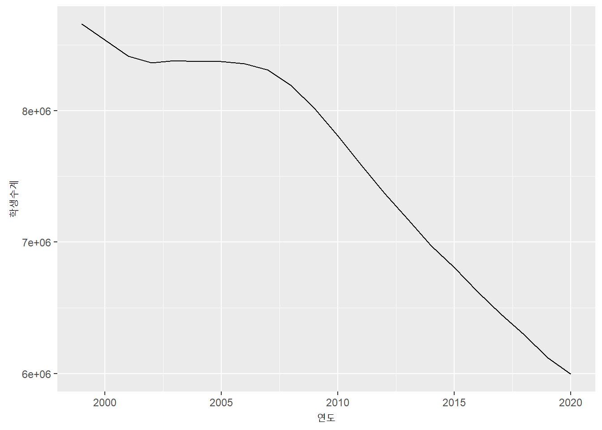
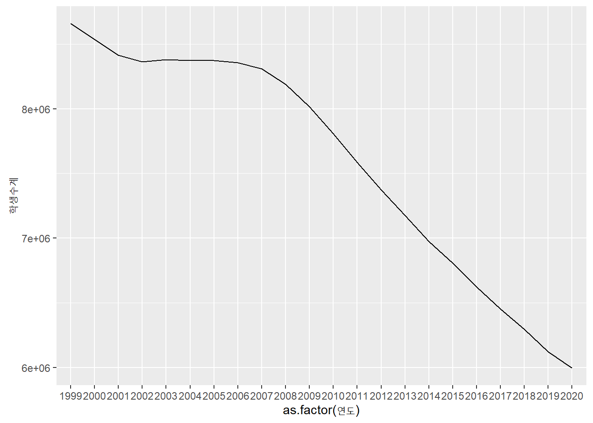
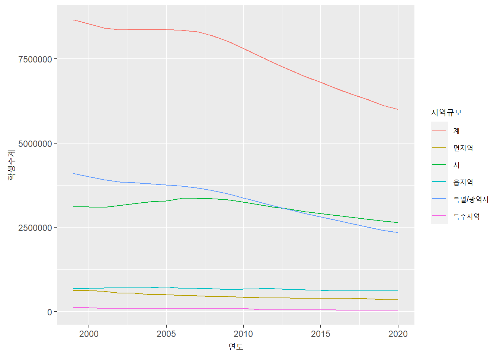
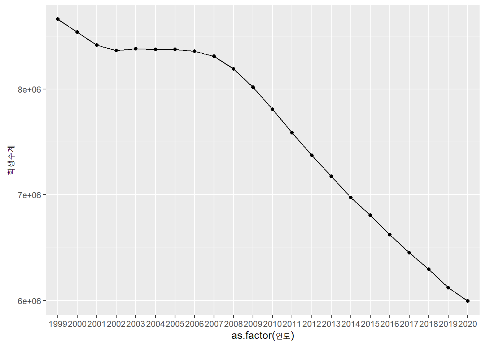
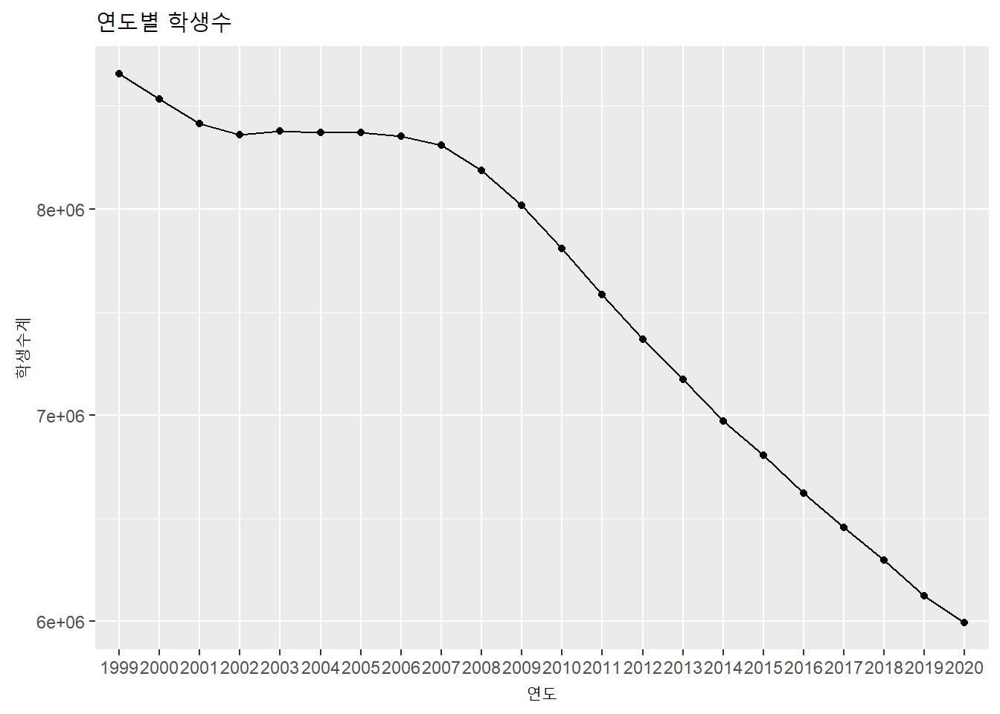
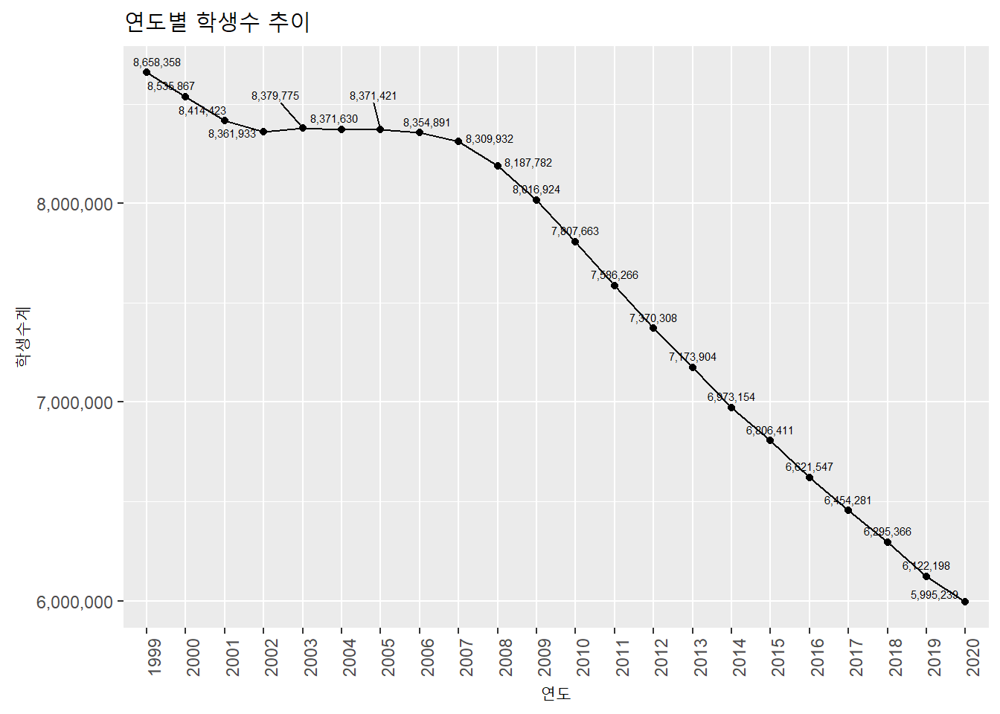
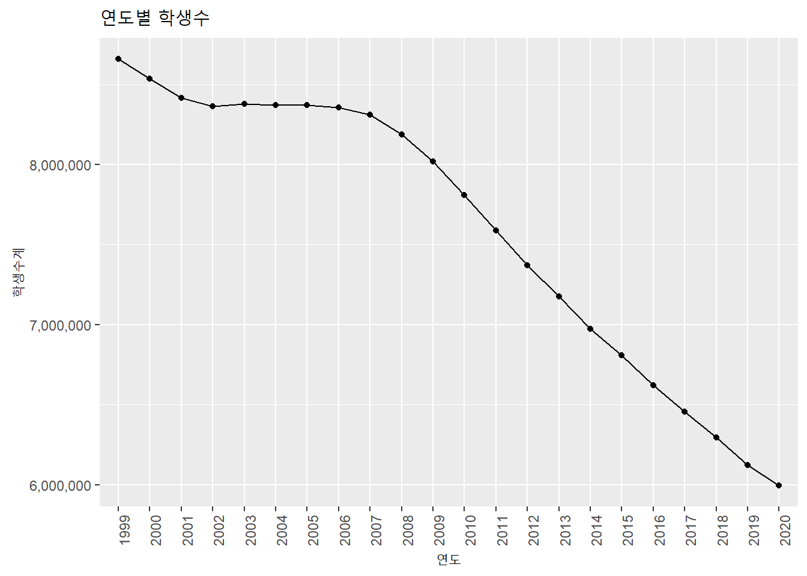

3.1 ggplot2
ggplot2는 시계열 데이터 이외에 다양한 plot을 그리는 방법을 제공하는 R의 대표적인 plot 작도 패키지로 널리 사용되고 있음. ggplot2는 R-Studio의 수석 데이터 사이언티스트인 Hadley Wickham이 주도적으로 개발한 패키지로 2005년 발간된 Leland Wilkinson의 The Grammar of Graphics을 기본으로 작성되었음.
The Grammar of Graphics는 데이터를 효과적으로 표현하기 위해 다음과 같은 7가지 element를 통해 표현할 것을 제안함.2 ggplot2 plot의 시작은 ggplot 함수를 호출하면서 시작하는데 다음의 각각 element들을 + 기호를 사용하여 누적시켜가면서 하나의 plot를 생성함.
- data
plot에서 표현해야할 데이터를 지정함. 하나의 ggplot2 plot 안에는 하나 이상의 데이터를 포함시킬수 있는데 기본적으로 하나의 데이터는 ggplot 함수에 포함되어야 하며 추가적인 데이터를 표현하기 위해서는 +로 연결되는 geom_ 함수에 설정하여 사용할 수 있음. ggplot에서 지원하는 데이터 타입은 data frame인데 data frame이 아닌 객체가 설정되면 내부적으로 data.frame으로 변환(fortify 함수를 활용)하여 데이터로 설정함.
- Aesthetics
Aesthetics는 데이터의 컬럼을 시각적 속성에 매핑시키는 element임. Aesthetics는 ggplot 함수와 geom_함수로 표현되는 개별 레이어에서 aes 매개변수를 이용하여 매핑 가능함. 매핑 가능한 시각적 속성은 X axis, Y axis, color, size 등임.
- Geometries
Geometries는 plot에서 실질적으로 표현되는 point, line, bar 등의 그래픽 element를 설정함. 일반적으로 하나의 Geometries는 하나의 layer를 생성하여 표현되는데 여러 Geometry layer가 겹쳐져서 하나의 plot을 생성하게 됨.
- Facet
plot에 표현되는 데이터가 일변량(univariate)이 아닌 다변량(multivariate)인 경우 하나의 plot에 다변량을 표현하면 여러 Geometries가 혼재되어 데이터의 분석이 어려움. 이런 경우 다변량을 일변량화하여 일변량 plot을 다중으로 표현할 때 사용하는 element임.
- Statistics
mean, median 등 표현할 데이터의 통계값을 표현할 필요가 있을 때 사용하는 element임.
- Coordinates
plot에 표현되는 2차원 좌표계를 설정하기 위한 element임. X axis와 Y axis의 limit, label 등을 설정할 수 있음.
- Theme
plot 제목, axis 제목, axis 단위, legend 등 plot의 전반적인 디자인을 꾸며줄 수 있음. 미리 정의된 Theme을 적용하여 설정할 수 있음.
ggplot를 활용해 시계열 plot를 표현하기 위해서는 위의 7개 element 중 Geometry는 line 이어야 하며 Aesthetic의 X axis는 시간 인덱스로 설정되는 plot이 많이 사용됨. 앞서 설명한 바와 같이 ggplot는 data.frame을 데이터로 설정이 가능하고 X axis에 시간 컬럼을 설정하기 위해서는 컬럼에 접근이 가능한 컬럼명이 있어야 하기 때문에 ts나 xts 클래스보다는 data.frame을 data로 설정하는 것이 적합함. 2장에서 저장한 students 데이터프레임을 시계열 plot으로 그리면 다음과 같음.
library(ggplot2)
students.ggplot <- students %>% filter(지역규모 == '계') # 2장에서 읽어들인 students data.frame에서 합계만 filtering
ggplot(data = students.ggplot, aes(x = 연도, y = 학생수계)) +
geom_line(aes(group = 1))
ggplot 문법 설명 및 plot 수정
‘data =’ : ggplot를 사용하여 플로팅하기 위한 데이터가 저장된 data.frame 객체명을 설정. ‘data =’ 키워드는 생략 가능하므로 바로 객체명을 설정해도 가능함.
aes : Aesthetic element를 설정하는 부분으로 ‘x =’ 은 가로축에 바인딩 될 컬럼명, ’y = ’은 세로축에 바인딩 될 컬럼명을 설정하는데 가로축은 시간이 포함된 컬럼을 설정해야 올바른 시계열 plot임. 위의 예제에서 X axis에 연도 컬럼을 바인딩했는데 student data.frame에 연도 컬럼은 integer class이기 때문에 바로 연도 컬럼을 바인딩 하면 연도가 다 표기되지 않고 일부 연도만 가로축에 표기됨. 연도 전체를 표기하기 위해 연도컬럼을 as.factor 함수를 사용해 factor class로 변환함
ggplot(data = students.ggplot, aes(x = as.factor(연도), y = 학생수계)) + geom_line(aes(group = 1))
geom_line : plot에 직접적으로 표기될 Geometries를 line으로 설정하는 부분임. 다른 Geometries와 달리 line plot은 하나의 라인으로 묶이는 데이터 그룹을 지정해야 하는데, 위의 예와 같이 데이터 그룹이 하나밖에 없을때는 1로 설정 가능함. 만약 다변량 라인 플롯을 작성시에는 그룹핑이 가능한 컬럼을 확보하고 이 컬럼을 ’group =’로 지정하여 ploting함.
ggplot(data = students, aes(x = 연도, y = 학생수계)) + geom_line(aes(group = 지역규모, color = 지역규모))
데이터 포인트 추가 : plot을 plot을 보다 보기 편하게 만들기 위해 point geometires layer를 추가함. geom_point함수를 사용하며 ’shape =’은 point 형태로 circle로 설정함.
ggplot(data = students.ggplot, aes(x = as.factor(연도), y = 학생수계)) + geom_line(aes(group = 1)) + geom_point(shape = 'circle')
plot 제목, 축 제목 설정 : 축 제목은 aes에서 설정된 컬럼명이 자동 설정되는데 앞서 X axis에 바인딩된 컬럼에 as.factor함수를 적용했기 때문에 축 제목이 ’as.factor(연도)’로 설정됨. 또한 전체 plot의 제목을 설정할 필요가 있는데 plot 제목과 X axis의 축 제목을 labs 함수를 사용하여 재설정해야 함.
ggplot(data = students.ggplot, aes(x = as.factor(연도), y = 학생수계)) + geom_line(aes(group = 1)) + geom_point(shape = 'circle') + labs(title = '연도별 학생수', x = '연도')
Y axis label : Y axis의 표현을 설정하는 부분으로 ’label =’은 Y axis에 표기되는 label 값이 클 경우 자연수가 아닌 지수형태로 표기되어 보기가 불편함. 따라서 지수 형태의 표기를 자연수 형태의 표기로 바꾸어줄 필요가 있으며 천단위에 ,를 찍어 보다 보기 편하게 설정함
ggplot(data = students.ggplot, aes(x = as.factor(연도), y = 학생수계)) + geom_line(aes(group = 1)) + geom_point(shape = 'circle') + labs(title = '연도별 학생수', x = '연도') + scale_y_continuous(labels = scales::number_format(big.mark = ','))
X axis label : X axis label이 너무 붙어있어서 연도가 정확히 보이지 않음. 따라서 연도를 90도 회전하여 세로쓰기하면 보다 보기가 편함.
ggplot(data = students.ggplot, aes(x = as.factor(연도), y = 학생수계)) + geom_line(aes(group = 1)) + geom_point(shape = 'circle') + labs(title = '연도별 학생수', x = '연도') + scale_y_continuous(labels = scales::number_format(big.mark = ',')) + theme(axis.text.x=element_text(angle=90,hjust=1))
ggplot외 타 패키지에서 제공하는 plot은 ggplot에서 제공하는 기능만큼 다양한 기능을 제공하지 않는다. 디자인이 중요한 plot을 작성하기 위해서는 ggplot의 다양한 기능을 사용하여 plot을 작성하는 것이 바람직하다. 이외에 ggplot에 관련한 자세한 사항은 다른 문서를 참조할 것을 권한다.